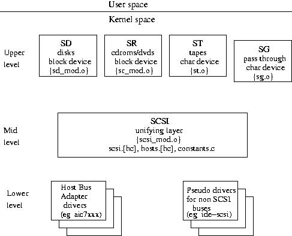

The SCSI subsystem has a 3 level architecture with the "upper" level being closest to the user/kernel interface while the "lower" level is closest to the hardware. The upper level drivers are commonly known by a terse two letter abbreviation (e.g. "sd" for SCSI disk driver). The names of the corresponding module drivers which, for historical reasons, sometimes differ from the built in driver names are shown in braces in the following diagram.

The 3 level driver architecture of the SCSI subsystem.
The upper level supports the user-kernel interface. In the case of sd and sr this is a block device interface while for st and sg this is a character device interface. Any operation using the SCSI subsystem (e.g. reading a sector from a disk) involves one driver at each of the 3 levels (e.g. sd, SCSI mid level and aic7xxx drivers).
As can be seen from the diagram, the SCSI mid level is common to all operations. The SCSI mid level defines internal interfaces and provides common services to the upper and lower level drivers. Ioctls provided by the mid level are available to the file descriptors belonging to any of the 4 upper level drivers.
The most common operation on a block device is to "mount" a file system. For a sd device typically a partition is mounted (e.g. mount -t ext2 /dev/sda6 /home). For a sr device usually the whole device is mounted (e.g. mount -t iso9660 /dev/sr0 /mnt/cdrom). The dd command can be used to read or write from block devices. In this case the block size argument ("bs") needs to be set to the block size of the device (e.g. 512 bytes for most disks) or an integral multiple of that device block size (e.g. 8192 bytes). A recent addition to the block subsystem allows a device (or partition) to be mounted more than once, at different mount points.
Sd is a member of the generic disk family, as is the hd device from the IDE subsystem. Apart from mounting sd devices, the fdisk command is available to view or modify a disk's partition table. Although the hdparm command is primarily intended for ATA disks (also known as IDE or EIDE disks), some options work on SCSI disks.
Sr is a member of the CD-ROM subsystem. Apart from mounting file systems (e.g. iso9660), audio CDs can also be read. The latter action does not involve mounting a file system but typically by invoking some ioctls. General purpose Linux commands such as dd cannot be used on audio CDs.
St is a char device for reading and writing tapes. Typically the mt command is used to perform data transfers and other control functions.
Sg is a SCSI command pass through device that uses a char device interface. General purpose Linux commands should not be used on sg devices. Applications such as SANE (for scanners), cdrecord and cdrdao (for cd writers) and cdparanoia (for reading audio CDs digitally) use sg.